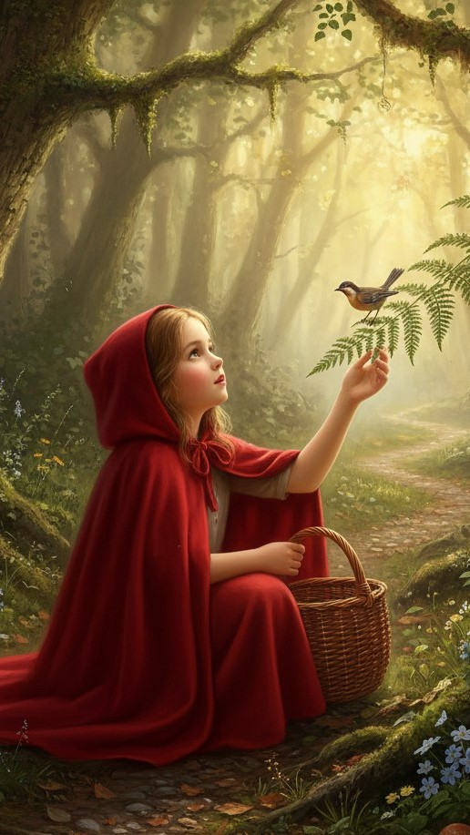
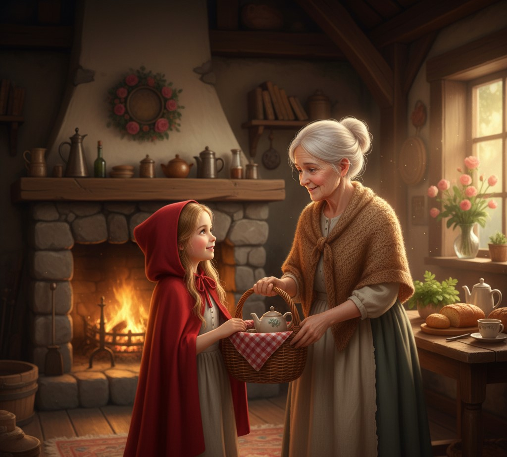
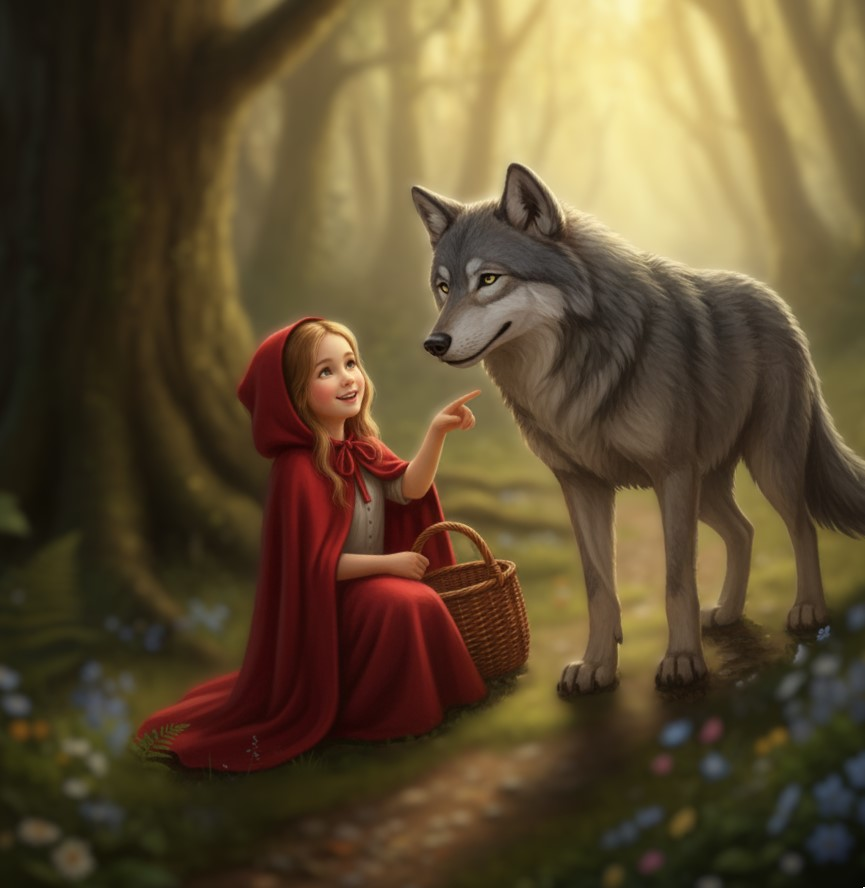
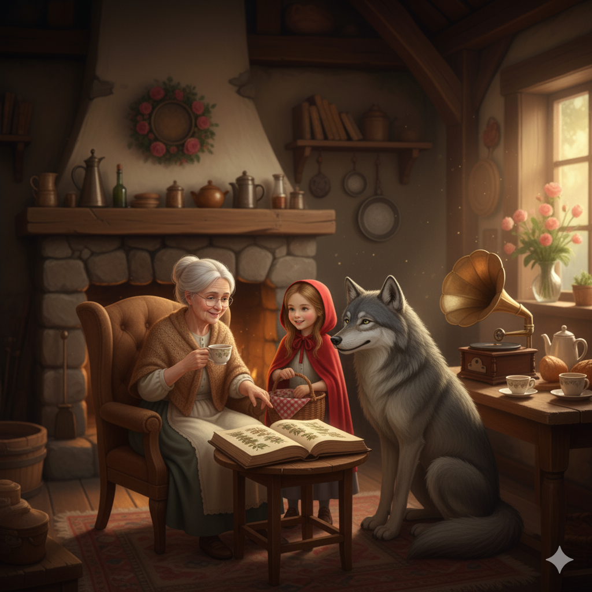

Había una vez una niña llamada Caperucita Roja, que adoraba recorrer el bosque prestando atención a cada detalle: los sonidos de los pájaros, el brillo de las hojas y los senderos escondidos.

Un día, su abuela le pidió que llevara una cesta con pan casero y té de hierbas.
—Ve con cuidado, querida —dijo la abuela—, y disfruta del camino.

Caperucita caminaba con alegría cuando se encontró con el Lobo, un guía del bosque que conocía cada rincón y a quien le encantaba mostrarlo a quienes lo visitaban. Caminando juntos, compartieron risas y descubrimientos: ella señalaba flores y colores, él contaba curiosidades del bosque que solo alguien con mucho tiempo y observación podía notar.

Cuando llegaron a la casa de la abuela, los recibió con té y música, y juntos hablaron de cómo cuidar el bosque para que todos pudieran disfrutarlo a su manera.

Desde entonces, el bosque se convirtió en un lugar donde la diversidad y las diferencias se integraban con naturalidad, y todos podían explorar, aprender y reír juntos.
Y colorín, colorado, este cuento inclusivo y feliz ha comenzado, no terminado.